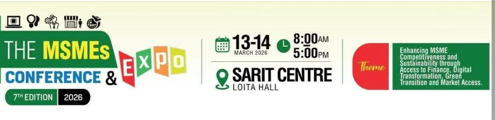
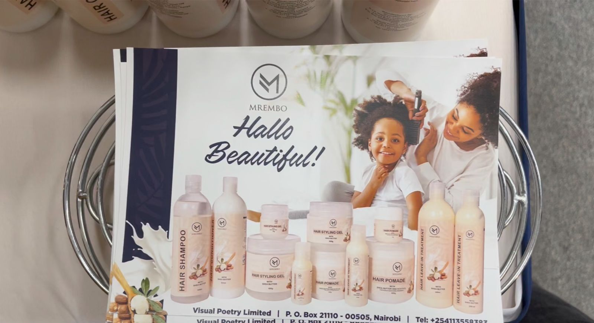
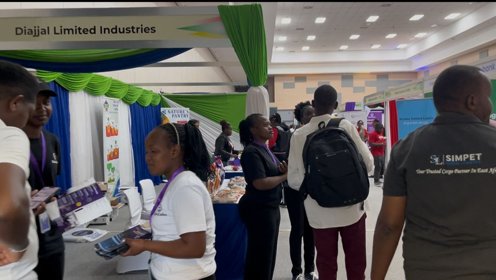
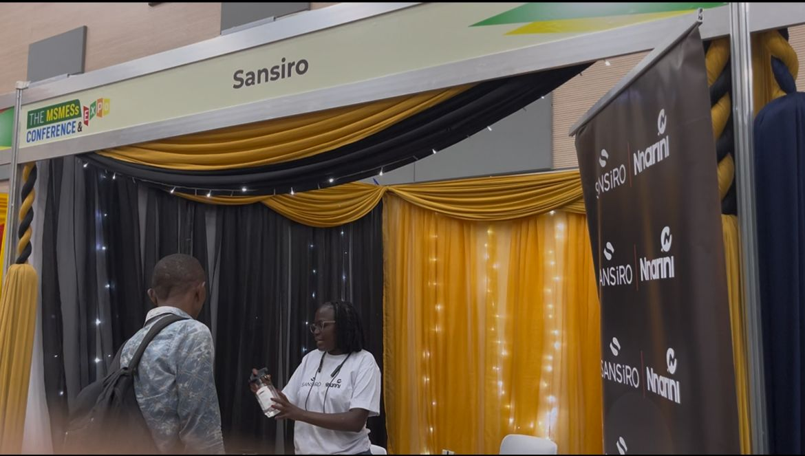

Inside the SME Nation Media Expo: Connecting with Innovative Businesses

Small and medium enterprises continue to play a vital role in driving innovation, economic growth, and employment opportunities. Events that bring entrepreneurs and businesses together create powerful opportunities for collaboration, learning, and visibility.
One such event was the SME Nation Media Expo, a vibrant gathering of businesses, creatives, and service providers showcasing their products and services. The event offered a dynamic environment where entrepreneurs could network, share ideas, and explore new partnerships.
During the expo, I had the opportunity to interact with several businesses across different industries—from finance and insurance to media production, beauty, and manufacturing.
Companies We Interacted With
1. Stima SACCO

One of the notable organizations present at the expo was Stima SACCO, a well-established financial cooperative known for providing savings and credit services. Financial access is often one of the biggest challenges faced by entrepreneurs and small businesses. SACCOs like Stima help bridge this gap by offering financial products such as loans, savings plans, and investment opportunities that support both individuals and businesses. Their presence at the expo highlighted the importance of financial inclusion and responsible financial planning for entrepreneurs looking to scale their businesses Stima SACCO is a financial cooperative known for providing savings and credit services that support individuals and entrepreneurs.
2. Lako Insurance Agency

Another important conversation was with Lako Insurance Agency, which provides insurance solutions for individuals and businesses. Insurance plays a critical role in helping businesses manage risk. Whether it is protecting assets, securing operations, or safeguarding employees, insurance solutions give entrepreneurs peace of mind as they grow their businesses. The team from Lako Insurance emphasized the importance of awareness around insurance products, especially for small businesses that may underestimate the risks associated with their operations.
3. Impala Visuals

In today's digital world, strong visual storytelling is essential for businesses looking to build strong brands and connect with their audiences. Impala Visuals showcased their work in photography, videography, and creative content production. Their services help businesses communicate their brand identity and tell compelling stories through high-quality visuals. For SMEs, working with creative media professionals can significantly improve marketing efforts, social media engagement, and overall brand perception.
4. Mrembo

The beauty and lifestyle sector was also represented at the expo by Mrembo, a brand focused on personal care and beauty solutions. The beauty industry continues to grow rapidly as consumers seek products and services that enhance confidence and self-expression. Businesses like Mrembo contribute to this space by offering solutions that promote wellness, self-care, and personal style. Their presence demonstrated how SMEs are tapping into lifestyle markets and responding to evolving consumer needs.
5. Diajjal Limited Industries

Manufacturing and industrial businesses are also essential components of the SME ecosystem. Diajjal Limited Industries showcased their work in industrial solutions and product manufacturing. Their participation in the expo highlighted the important role that local industries play in strengthening supply chains and supporting economic growth. By participating in events like this, industrial companies can build awareness of their capabilities and explore partnerships with other businesses.
6. Sansiro

Among the lifestyle brands present was Sansiro, known for its fragrance products and perfume collections. Fragrance brands have grown increasingly popular due to the demand for accessible luxury and personal identity through scent. Sansiro's range of perfumes attracted attention from visitors interested in high-quality fragrance products. Their presence reflects how SMEs are expanding into lifestyle and consumer goods markets while maintaining affordability and quality
Key Takeaways from the Expo
Collaboration Drives Growth
Events like this help businesses build valuable partnerships.
Innovation Across Industries
SMEs continue to deliver creative solutions across finance, media, beauty, and manufacturing.
Visibility Matters
Expos give businesses the exposure they need to reach new customers.
Final Thoughts
Attending the SME Nation Media Expo was a valuable experience that showcased the innovation, creativity, and resilience of small and medium enterprises. Interacting with companies like Stima SACCO, Lako Insurance Agency, Impala Visuals, Mrembo, Diajjal Limited Industries, Sansiro, and Touche provided insights into how businesses across different sectors are contributing to economic growth and innovation. Events like these not only highlight entrepreneurial talent but also remind us of the importance of supporting and celebrating SMEs. As the SME ecosystem continues to grow, platforms like this expo will remain essential in connecting businesses, sharing ideas, and inspiring the next generation of entrepreneurs.